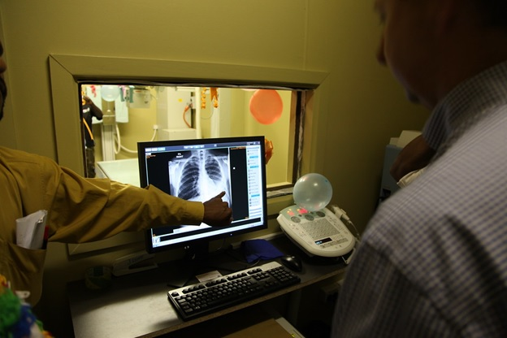

Alta Futuris is leading digital transformation services and solutions provider that effectively embed power of Artificial Intelligence in image processing. From the early days of X-ray imaging in the 1890s to more recent advances in CT, MRI and PET scanning, medical imaging continues to be a pillar of medical treatment. Current advances in imaging hardware — in terms of quality, sensitivity and resolution — enable the discrimination of minute differences in tissue densities. Such differences are, in some cases, difficult to recognize by a trained eye. Artificial intelligence (AI) algorithms, particularly deep learning, have demonstrated remarkable progress in image-recognition tasks. Methods ranging from convolutional neural networks to variational autoencoders have found myriad applications in the medical image analysis field, propelling it forward at a rapid pace. Historically, in radiology practice, trained physicians visually assessed medical images for the detection, characterization and monitoring of diseases. AI methods excel at automatically recognizing complex patterns in imaging data and providing quantitative, rather than qualitative, assessments of radiographic characteristics.
Alta Futuris team is well experienced with latest deep learning architectures for segmentation including fully convolutional networks, which are networks comprising convolutional layers only, that output segmentation probability maps across entire images. Alta Futuris team is extremely hands on with other architectures, such as the U-net, that has been specifically designed for medical images. The team with it’s vast expertise can develop a single deep learning system which would be able to perform diverse segmentation tasks across multiple modalities and tissue types, including brain MRI, breast MRI and cardiac CT angiography (CTA), without task-specific training.